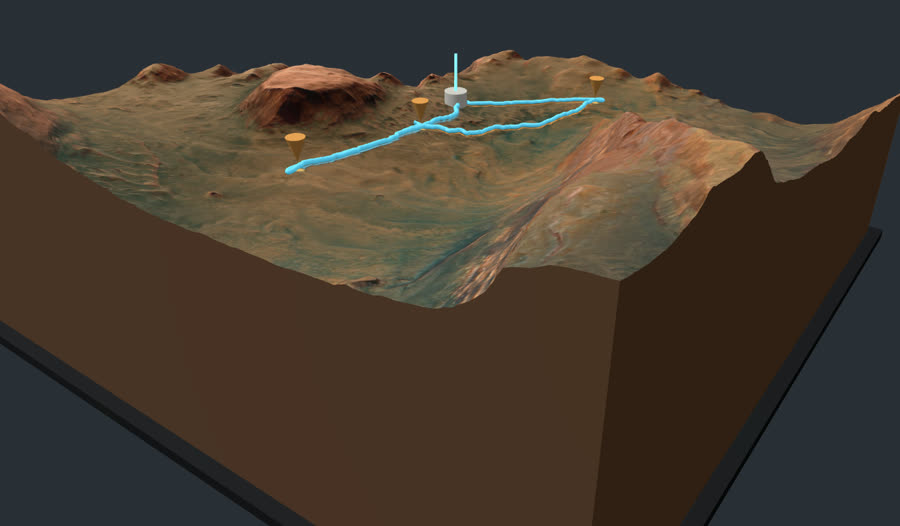

TETHER
Mount Sharp, on your table
Real terrain of Curiosity’s boxwork region on Mars, with a planned Marswalk and the zone from which the crew can still walk home.

Open in AR Open the full TETHER planner
Planned route, and the habitat with its beacon
Science stops: real Curiosity drill sites
Inside the tether: the crew can still walk home with its reserve
Beyond the tether
Terrain: USGS MSL Gale 1 m DEM and HiRISE colour (NASA/JPL/University of Arizona), shown about 1.2 km wide at 0.5 m, height ×1.5. Demo plan: habitat near Curiosity’s sol 4600 position, stops at Altadena, Nevado Sajama and Campo Marte. Not affiliated with NASA.